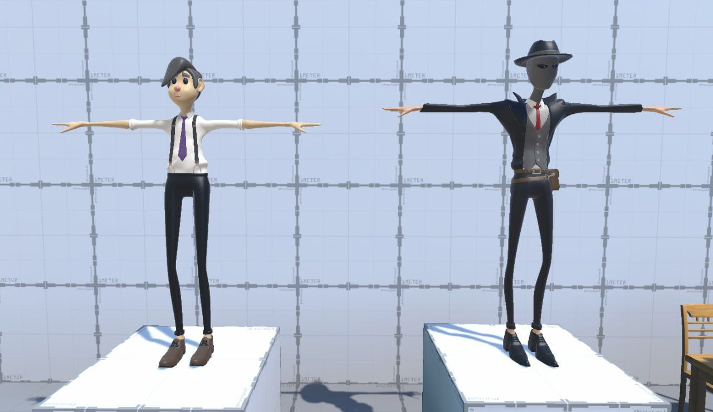
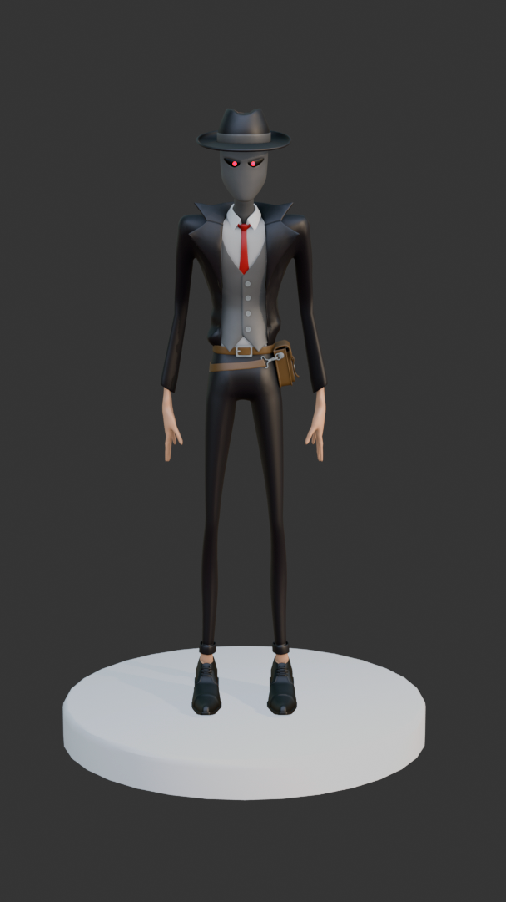
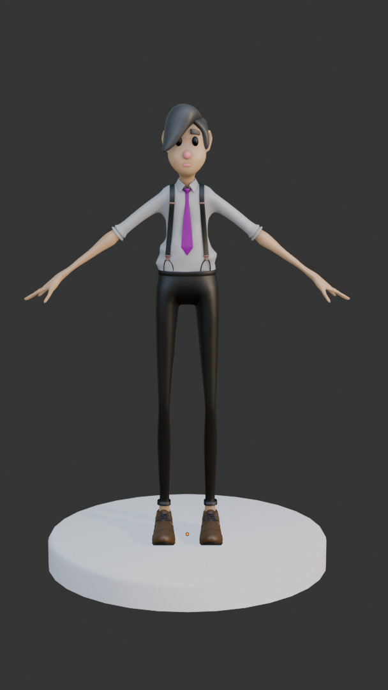
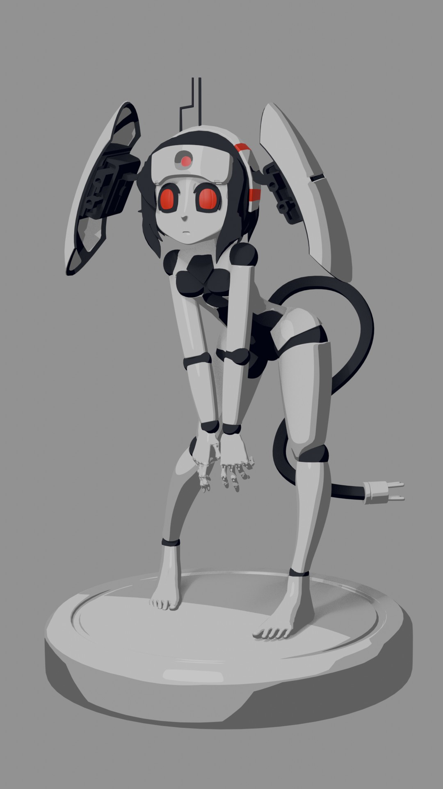
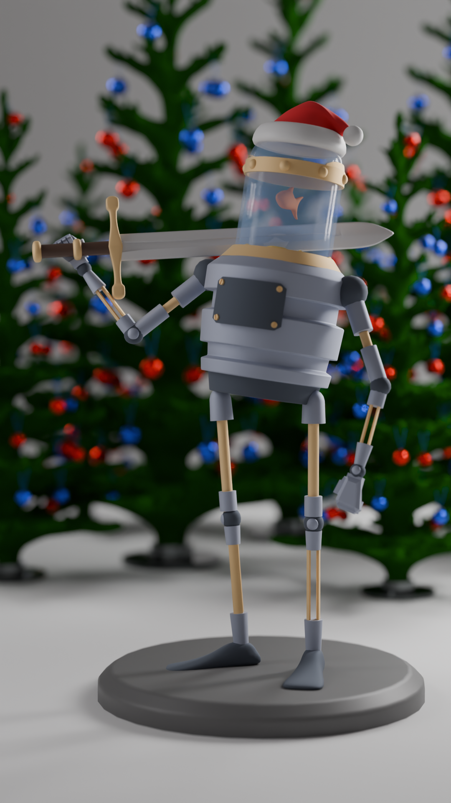

This project is a high-poly character sculpt created in ZBrush and Blender. The goal was to practice anatomy, surface detail and stylized proportions.
The character was first blocked out in Blender. After that the sculpting phase was done in ZBrush where secondary and tertiary details were added. The model was then rendered using Marmoset Toolbag.



